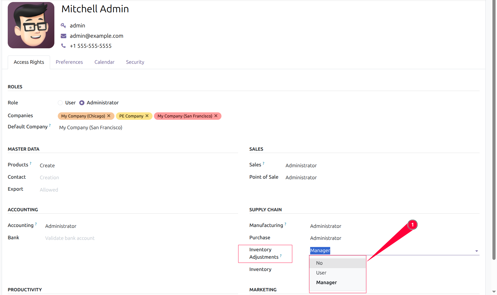
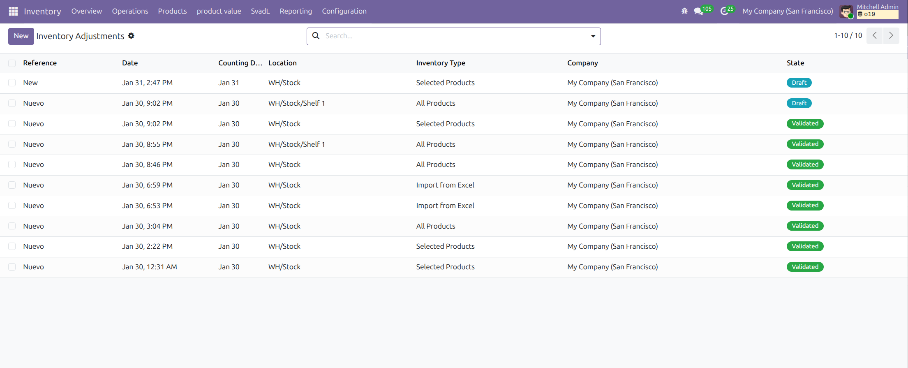
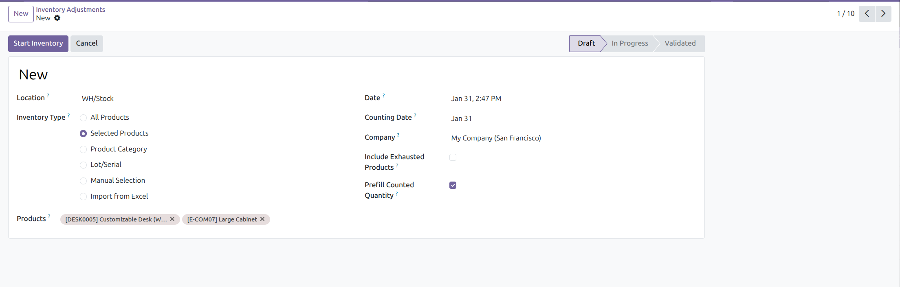
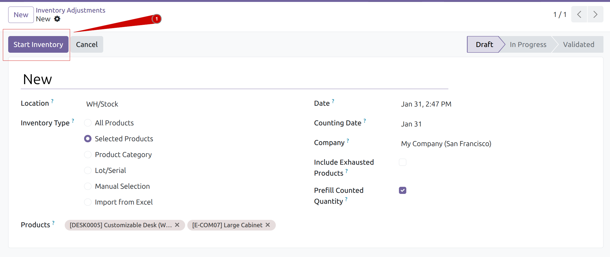
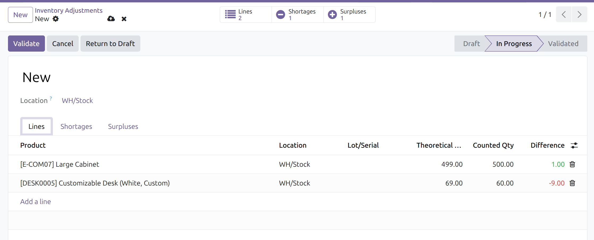
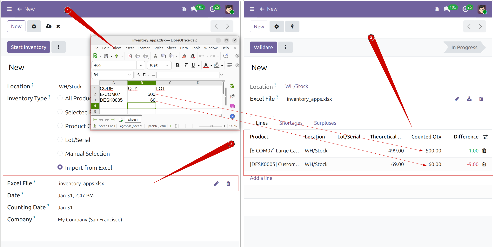
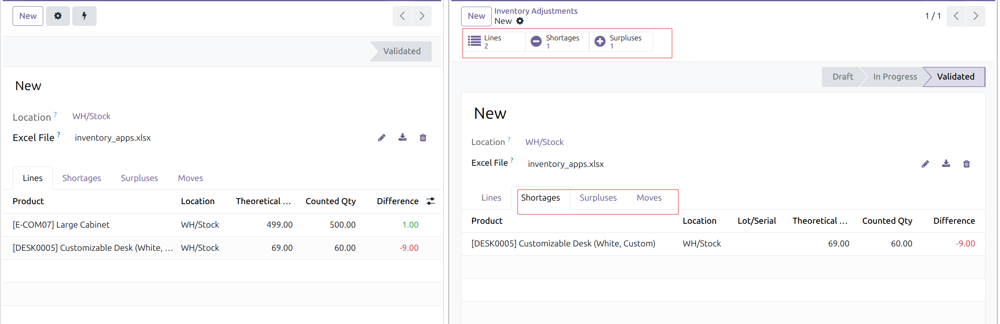
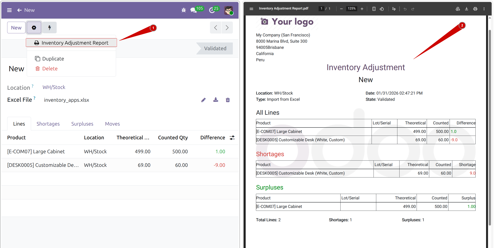

🔑 1. Acceso y Roles
- Crear ajustes
- Iniciar inventario
- Validar / Cancelar
- Borrar (solo Draft)
- Ver ajustes
- Ver líneas
- Sin edición

Requisitos: Acceso a ubicaciones internas y productos.
📋 3. Vista Lista
Verás todos los ajustes con las siguientes columnas:
| Columna | Descripción |
|---|
| Reference | Nombre del ajuste |
| Date | Fecha de creación |
| Location | Ubicación inventariada |
| Type | Tipo de inventario |
| State | Draft / In Progress / Validated / Cancelled |
Filtros: Draft, In Progress, Validated. Agrupar: Location, State, Type.

➕ 4. Crear Ajuste
- Clic en botón Create
- Selecciona Location (ubicación interna)
- Elige Inventory Type

| Tipo | Descripción | Campo extra |
|---|
| All Products | Todos los productos con stock | - |
| Selected Products | Productos específicos | Products |
| Product Category | Filtrar por categoría | Category |
| Lot/Serial | Un lote específico | Lot |
| Manual Selection | Agregar líneas manualmente | - |
| Import from Excel | Cargar desde archivo | Excel File |
Prefill Counted Qty: Precarga teórico en contado
Include Exhausted: Incluye productos con stock = 0
▶ 5. Iniciar Inventario
- Clic en botón Start Inventory
- Estado cambia a In Progress
- Se generan las líneas automáticamente

Bloqueo: Solo 1 inventario en progreso por ubicación. Completa o cancela antes de crear otro.
📝 6. Editar Líneas

| Campo | Descripción |
|---|
| Product | Producto a contar |
| Location | Ubicación |
| Lot/Serial | Lote (si aplica) |
| Theoretical | Cantidad en sistema (solo lectura) |
| Counted | Cantidad física (editable) |
| Difference | Rojo = faltante, Verde = sobrante |
Tabs: Lines (todas), Shortages (faltantes), Surpluses (sobrantes), Moves (después de validar).
📥 7. Importar desde Excel
- Tipo: Import from Excel
- Adjunta archivo en campo Excel File
- Clic en Start Inventory

| CODE | QTY | LOT (opcional) |
|---|
| PROD001 | 50 | LOT-2024-001 |
| PROD002 | 25 | |
- CODE: Referencia interna o código de barras
- QTY: Cantidad contada (numérico)
- LOT: Solo si el producto tiene tracking
- Formatos: .xlsx, .xls, .csv
✅ 8. Validar Inventario
- Revisa todas las líneas
- Verifica tabs Shortages y Surpluses
- Clic en botón Validate
- Estado cambia a Validated
Resultado: Se crean movimientos de stock automáticamente:
• Faltantes → salida de ubicación
• Sobrantes → entrada a ubicación
Importante: Una vez validado NO se puede editar ni cancelar.

📄 9. Reporte PDF
- Abre el ajuste validado
- Menú: Print → Inventory Adjustment Report
- Descarga el PDF

- Encabezado: Referencia, Ubicación, Fecha, Tipo, Estado
- Todas las líneas con Teórico, Contado, Diferencia
- Sección Faltantes (rojo)
- Sección Sobrantes (verde)
- Totales: líneas, faltantes, sobrantes